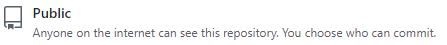
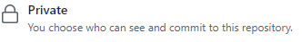
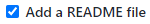

#CRIANDO REPOSITORIO
##Após realizar o acesso e logar no github.com
###Clique na aba " REPOSITÓRIOS"
Já na página dos " REPOSITÓRIOS"
Click no botão novo
Seguindo as orientações abaixo preencha o formulário:
Repository name: "Nome do repositório"
Defina o tipo de repositório Público ou Privado
Publico (Qualquer pessoa pode ver)

Privado (Somete pessoas autorizadas tem o acesso)

Adicione o arquivo README para descrição do projeto.

Sugestão durante a criação e inicialização do repositório:
- Adicionar uma descrição ao projeto e Add .gitignore conforme a template da linguagem.